Dentista em Fortaleza
Sou a Dra. Camila Lôbo, possuo residência em Odontologia Hospitalar pelo Hospital Geral de Fortaleza/CE, com ampla experiência clínica no cuidado de pacientes com dor orofacial e bruxismo. Ofereço tratamentos individualizados com o objetivo de promover alívio, reequilíbrio funcional e melhora significativa na sua qualidade de vida.
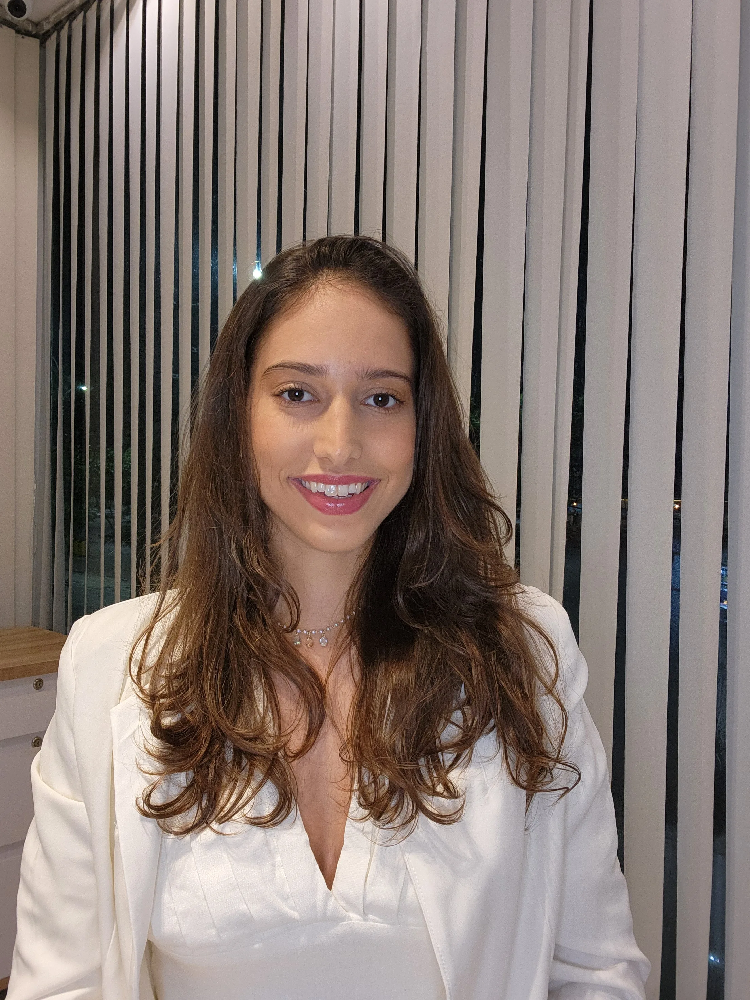
Residência em Odontologia Hospitalar
Atuação em DTM / Bruxismo
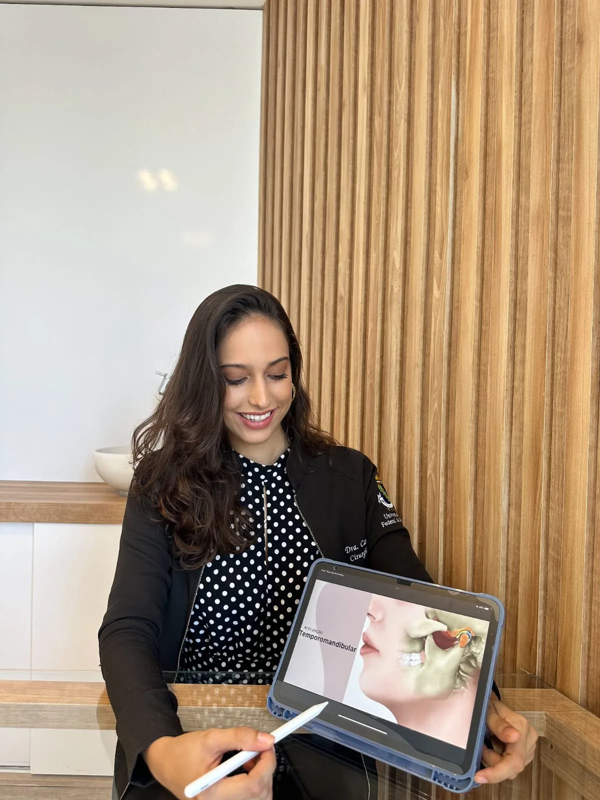
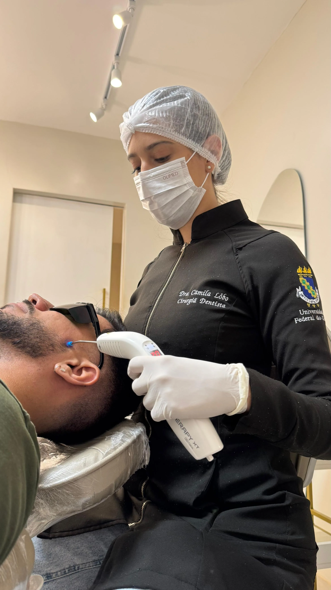
Meu compromisso é oferecer uma odontologia humanizada, que vai além do sorriso e cuida da sua saúde de forma integral. Sou apaixonada pelo que faço e fico feliz em cada paciente que transforma sua vida através do tratamento.
Com experiência no atendimento de Disfunção Temporomandibular (DTM), ajudo pacientes que sofrem com dores de cabeça, mandíbula, pescoço e outros sintomas relacionados à articulação temporomandibular — promovendo alívio da dor, melhora funcional e mais qualidade de vida.
Além da atuação em DTM, também ofereço um cuidado odontológico completo e individualizado. Atendo pacientes com necessidades especiais com acolhimento e sensibilidade, realizo procedimentos de estética dentária com foco em naturalidade, acompanho o público infantil com atenção e leveza, e executo cirurgias odontológicas com segurança e precisão. Tudo com um olhar cuidadoso voltado ao seu bem-estar e qualidade de vida.
Tratamentos odontológicos realizados com cuidado, tecnologia e atenção individualizada para cada paciente.
Diagnóstico e tratamento especializado para dores na mandíbula, cabeça, pescoço e articulação temporomandibular. Reabilitação completa para sua qualidade de vida.
Atuação principalDiagnóstico e tratamento do hábito de ranger ou apertar os dentes, aliviando dores musculares, protegendo os dentes e melhorando a qualidade do sono e do bem-estar.
Tecnologia que auxilia no alívio da dor, acelera a cicatrização e reduz inflamações. Um recurso moderno, seguro e confortável, que potencializa os resultados do seu tratamento.
Procedimentos voltados à harmonia do sorriso, com resultados naturais e personalizados. Realce da sua estética com equilíbrio, sutileza e segurança.
Correções e contornos gengivais que valorizam o sorriso e proporcionam mais harmonia facial. Cuidado preciso para um resultado natural e saudável.
Atendimento completo para prevenção, diagnóstico e tratamento da saúde bucal. Cuidado contínuo para manter seu sorriso saudável em todas as fases.
Atenção especializada para crianças, com foco em prevenção, conforto e experiências positivas desde os primeiros cuidados com a saúde bucal.
Procedimentos realizados com técnica, segurança e planejamento individualizado. Foco no bem-estar e em uma recuperação tranquila.
Atendimento odontológico adaptado para pessoas que necessitam de um cuidado diferenciado, seja por condições físicas, sensoriais, emocionais ou sistêmicas. Cada consulta é conduzida com acolhimento, paciência e atenção aos detalhes, garantindo conforto, segurança e uma experiência tranquila.
Atendimento odontológico no conforto do seu lar, com cuidado humanizado e adaptado às suas necessidades. Ideal para pacientes que necessitam de mais comodidade, seguranca, e atenção individualizada.
Ofereço um atendimento completo, humanizado e especializado para que cada paciente se sinta acolhido e obtenha os melhores resultados.
Fale comigoAtuação direcionada ao diagnóstico e manejo das dores na face e mandíbula, com abordagem precisa e individualizada.
Cada paciente é atendido de forma única, com escuta atenta, planejamento cuidadoso e respeito às suas necessidades.
Condutas baseadas em conhecimento atual e técnicas modernas, proporcionando mais segurança, conforto e previsibilidade.
Um olhar completo sobre sua saúde, integrando função, estética e bem-estar para resultados que vão além do tratamento.
Cada caso é único. Veja a transformação de alguns pacientes tratados com dedicação e abordagem individualizada.
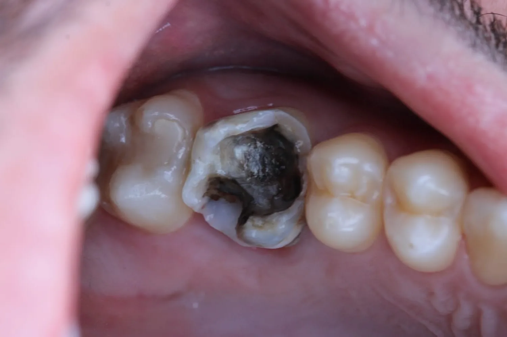
Antes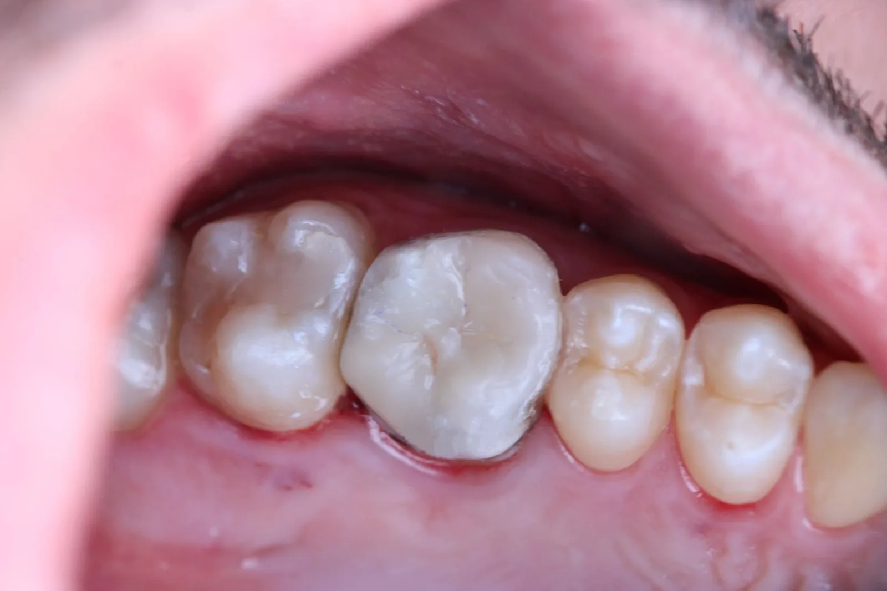
DepoisCaso 01
Reabilitação e Equilíbrio Oclusal
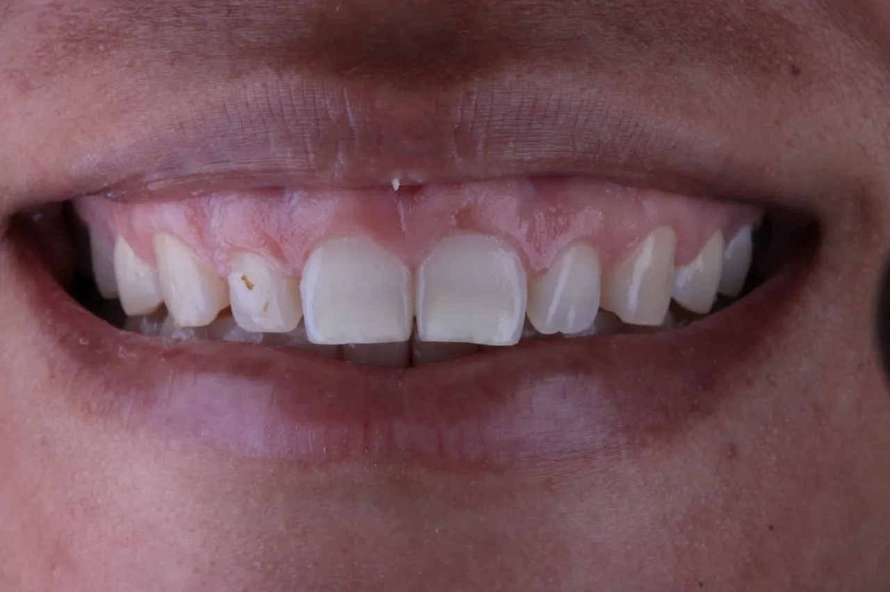
Antes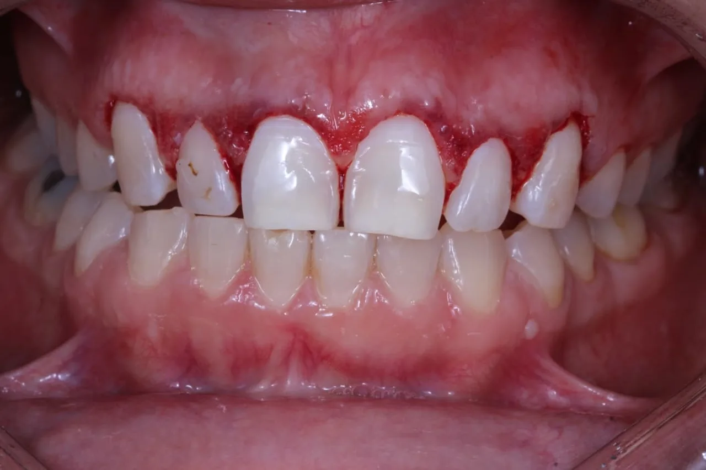
DepoisCaso 02
Gengivoplastia - Estética Vermelha
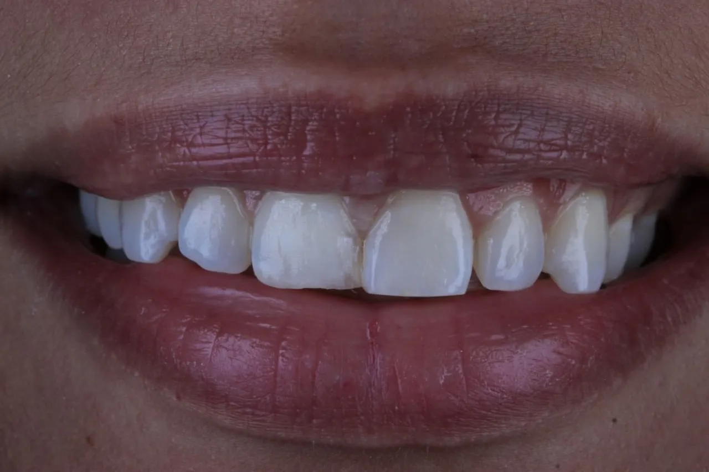
Antes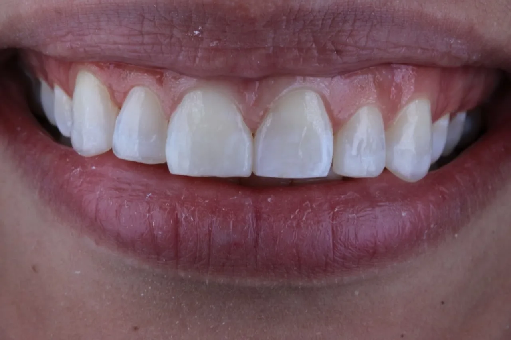
DepoisCaso 03
Restauração Estética e Recontornos com Naturalidade
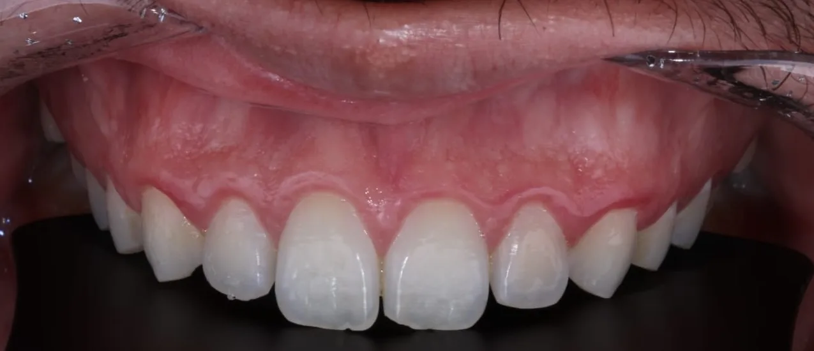
Antes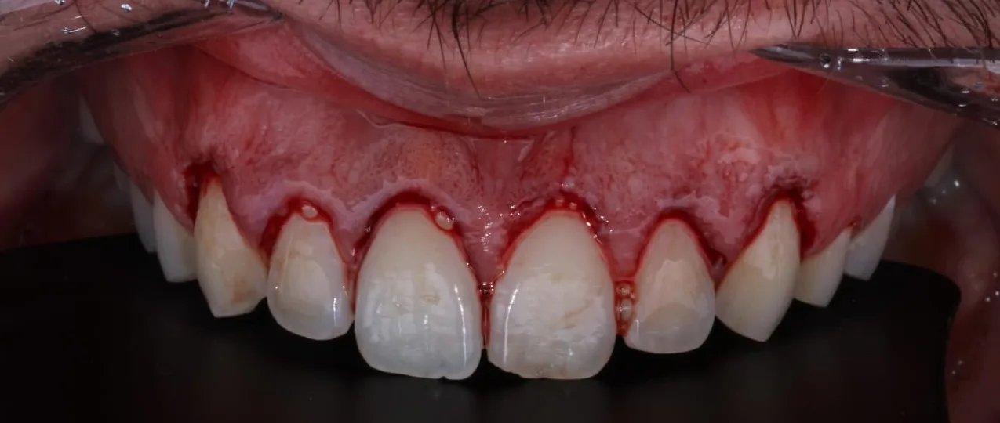
DepoisCaso 04
Gengivoplastia - Estética Vermelha
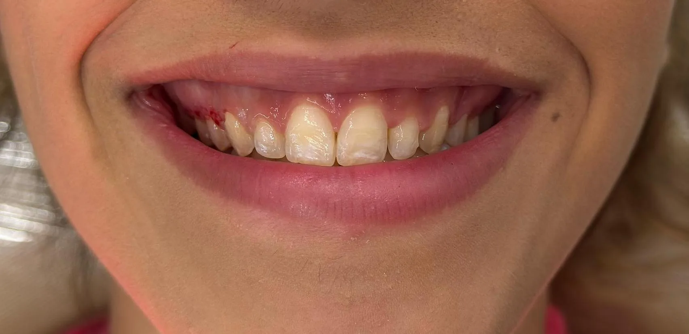
Antes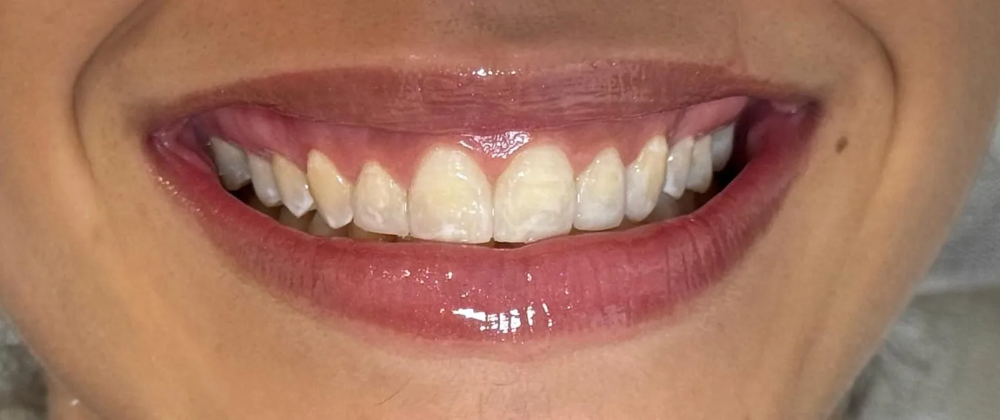
DepoisCaso 05
Harmonização do Sorriso - Estética Vermelha e Estética Branca
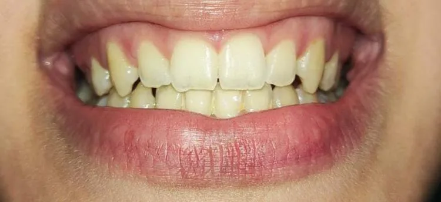
Antes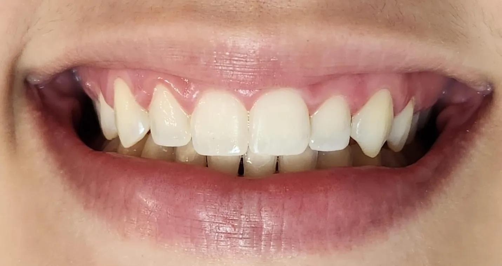
DepoisCaso 06
Clareamento Dental e Estética Branca
Ótimo atendimento! Muito tranquila, muito segura, teve muita paciência, me explicou tudo direitinho. Recomendo sem medo algum.
A Dra. Camila é simplesmente incrível! Cheguei no consultório cheio de dúvidas e dores, e ela me atendeu super bem, com muita atenção. O tratamento deu super certo e finalmente fiquei livre das dores! Além de ótima profissional, é super gente boa!
A Dra. Camila foi simplesmente maravilhosa! Estava com um problema que já vinha me incomodando há tempos, e ela soube exatamente como tratar com competência e sensibilidade. Seu atendimento é humanizado, cuidadoso e extremamente profissional. Saí do consultório aliviado e confiante. Recomendo demais!
Tive uma excelente experiência com a Dra. Camila. Desde o primeiro atendimento, ela foi extremamente atenciosa, profissional e cuidadosa. Eu estava com um problema que já me incomodava há algum tempo, e ela rapidamente identificou a causa.
Senti uma diferença enorme após ser tratado pela Dra. Camila. Ela me atendeu com paciência, escutou minhas queixas e propôs um plano ótimo que realmente funcionou. Muito feliz com o resultado.
Tive a grata satisfação de ser atendida pela Dra. Camila, cirurgiã-dentista especialista em DTM/ATM e laserterapia, cuja conduta profissional e excelência técnica merecem ser destacadas.
Excelente atendimento! A Dra. Camila demonstrou total domínio na área e foi super atenciosa do início ao fim. O tratamento foi eficaz e já senti a melhora logo nos primeiros dias. A clínica é organizada e o ambiente, muito agradável. Só tenho elogios!
Fiquei muito satisfeita com o atendimento da Dra. Camila. Ela foi muito clara nas explicações, me passou segurança desde o início e, o mais importante, resolveu meu problema com eficiência. Além de ser uma excelente dentista, é muito simpática.
Fui atendido pela Dra. Camila e só tenho elogios! Ela foi muito atenciosa, explicou cada etapa do tratamento com clareza e me deixou totalmente tranquilo. É raro encontrar alguém tão dedicada e cuidadosa.
Finalizei hoje o meu tratamento com a Dra. Camila, esperei finalizar para poder avaliar. Quero deixar registrado minha gratidão à profissional, por toda sua atenção e dedicação.
A Dra é incrível, atendeu a mim e aos meus problemas com excelência, impecável. Me sinto muito bem cuidada pelas mãos dela e o processo tem vindo com resultados cada vez melhores, realmente perfeito.
Dra Camila é muito atenciosa e prestativa. Me deu atenção e todo cuidado em um momento de crise. Não senti mais dores, graças a Deus e os cuidados dela.
Foi o melhor atendimento que já tive. Venho buscando há muito tempo um atendimento que realmente resolvesse meu problema, mas a Dra Camila foi um achado!
Excelente profissional! Atenciosa, paciente e muito competente. Tive um atendimento confortável e recomendo!
Atenciosa e cuidadosa. Estou em tratamento com ela ainda, mas estou sentindo a melhora gradativa, principalmente depois do laser. Ótima profissional, recomendo.
Agendei uma consulta com a doutora, muito atenciosa, tirou todas as minhas dúvidas e trouxe todas as recomendações. Foi muito bom. Recomendo.
Melhor dentista que fui na minha vida! Muito profissional, sanou todas as minhas dúvidas e ainda me tranquilizou com o processo. Recomendo demais!
Tenho bruxismo e estou muito satisfeito com o acompanhamento que venho tendo com a Dra. Camila.
Excelente profissional, atenciosa e paciente, super indico!
Tire suas principais dúvidas sobre DTM, consultas e tratamentos. Se precisar de mais informações, entre em contato pelo WhatsApp.
Tirar dúvidasFortaleza, CE.